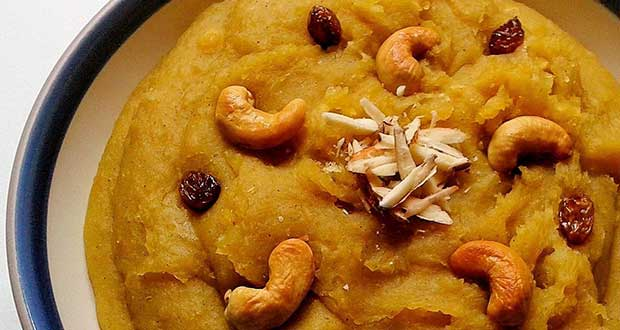

Halwa Recipe
Halwa made by Althaf

A well home made halwa.About Gluten Free Polenta Halwa Recipe: The festive season is all about delicious sweets and ...
Ingredients of Gluten Free Polenta Halwa
- 500 gms gluten-free polenta
- 100 gms ghee
- 5 nos riped banana
- 50 gms dry fruits
- 50 gms nuts
- 750 ml milk
- 0.5 gms saffron
How to Make Gluten Free Polenta Halwa :
- Heat a heavy bottomed tawa; add ghee and gluten-free polenta on a low flame until it is aromatic brown colour.
- In a separate pan put 250 ml milk, riped banana and saffron in it well until it is of a mashy consistency.
- When polenta is well roasted, add the banana mixture and stir well so that no lumps are formed.
- Add rest of milk and stir well again until desired consistency.
- Serve hot with chopped dry fruits and nuts as garnishing.